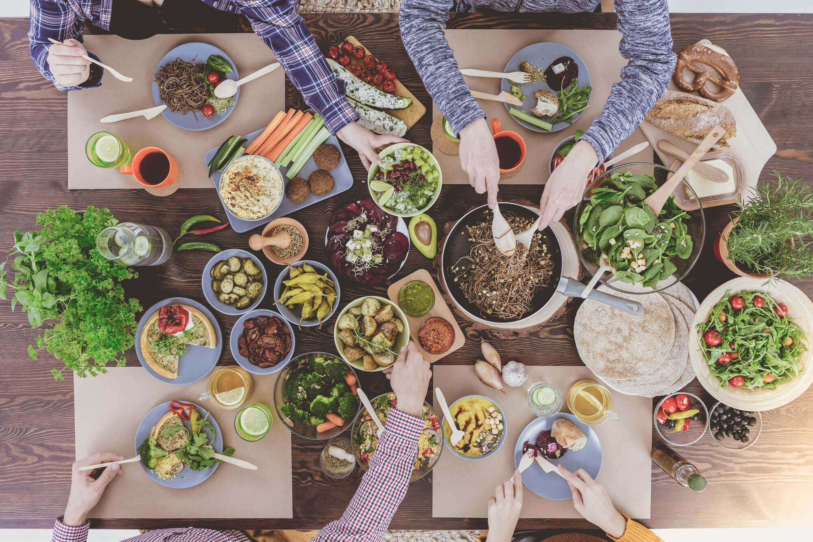

About Stronger by the Plate
Stronger by the Plate is more than just a website — it’s a wellness movement built around the idea that the path to a long, healthy life begins with what’s on your plate.
Our Mission
Our mission is to empower individuals of all ages to take control of their health by making sustainable, informed choices about food and fitness. We believe small daily actions, like preparing a wholesome meal or taking a walk with friends, can have a powerful impact on overall well-being.
Meet Our User: Maria
Name: Maria Rodriguez
Age: 42
Occupation: Elementary School Teacher
Goals: Boost energy, eat healthier, maintain an active lifestyle
Challenges: Busy schedule, low motivation, limited time
Bio: Maria is a devoted mom who recently started focusing more on her health. She uses Stronger by the Plate for quick recipe ideas and daily movement inspiration that fit her lifestyle.
What We Believe
- Plant-Forward Eating: Most of your plate should be vegetables, fruits, legumes, and whole grains.
- Mindful Movement: Consistent, enjoyable physical activity that fits your lifestyle.
- Community Connection: Wellness isn’t just physical — social bonds are essential.
- Accessible Health: Everyone deserves access to tools that help them thrive.
Who We Serve
Students, parents, retirees, athletes — Stronger by the Plate is here for anyone seeking better health.
Our Promise
We aim to be a trustworthy source of wellness knowledge that prioritizes balance, not extremes. We celebrate progress, not perfection — and we’re here to help you every step of the way.
